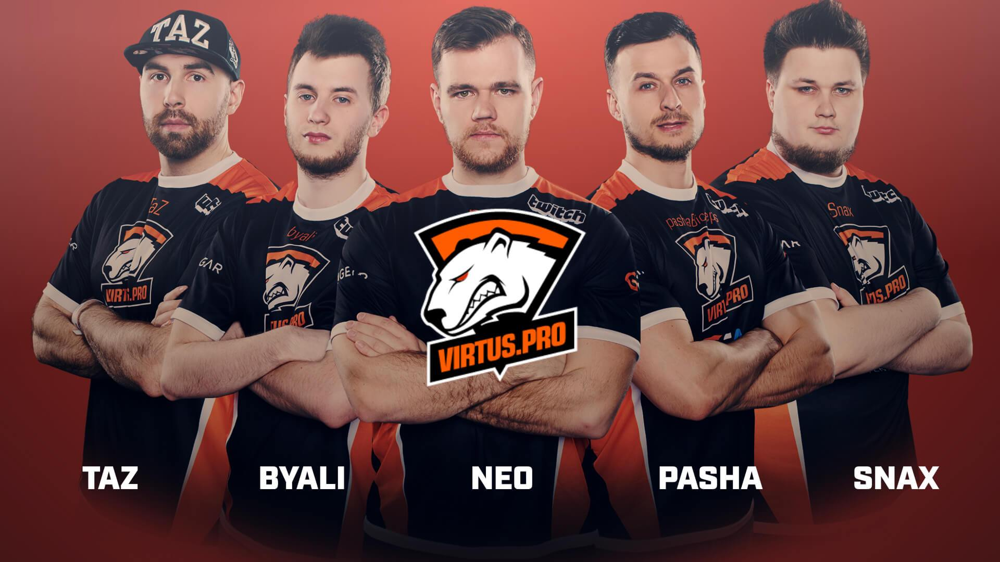

Jarosław Jarząbkowski do 2010 r. grał w polskich drużynach
amatorskich w Counter-Strike'a 1.6. W lutym 2010 r. dołączył do
grupy Frag eXecutors, wraz z którą zajął 3. miejsce na World Cyber
Games 2010.
W 2011 r. Pasha zajął 1. miejsce na ostatnim turnieju Intel Extreme
Masters VI w CS 1.6 a także wygrał World Cyber Games 2011 wraz z
drużyną ESC Gaming.
W 2012 r. PashaBiceps zaczął grać w nowo wydanego Counter-Strike'a:
Global Offensive. W 2013 r. dołączył do drużyny Universal Soldiers.
W 2014 r. wraz z Januszem "Snaxem" Pogorzelskim, Pawłem "byalim" Bielińskim, Filipem "NEO" Kubskim i Wiktorem "TaZem" Wojtasem dołączył do drużyny Virtus.pro. W marcu tego samego roku drużyna zajęła 1. miejsce w światowym turnieju EMS One Katowice 2014. W latach 2014-2017 drużyna zajmowała miejsce na podium w bardzo wielu globalnych mistrzostwach. Pod koniec 2018 r. Jarosław opuścił aktywnie grający skład Virtus.pro. W 2019 r. Pasha na stałe odszedł z drużyny, przerywając tym samym swoją profesjonalną karierę e-sportową.

Pomimo, że Pasha nie jest aktualnie członkiem żadnego
profesjonalnego zespołu, jest znany i lubiany przez graczy z całego
świata. W 2019 r. został on wybrany do wniesienia pucharu na scenę
podczas turnieju IEM Major w Katowicach, jako "osoba, która już raz
uniosła tam trofeum".
Obecnie PashaBiceps gra w półprofesjonalnej polskiej drużynie i
prowadzi transmisje na żywo na platformie Twitch. Jego streamy są
oglądane przez tysiące fanów.
Wszystkie turnieje w których brał udział Pasha oraz zajęte przez jego drużynę miejsca: link